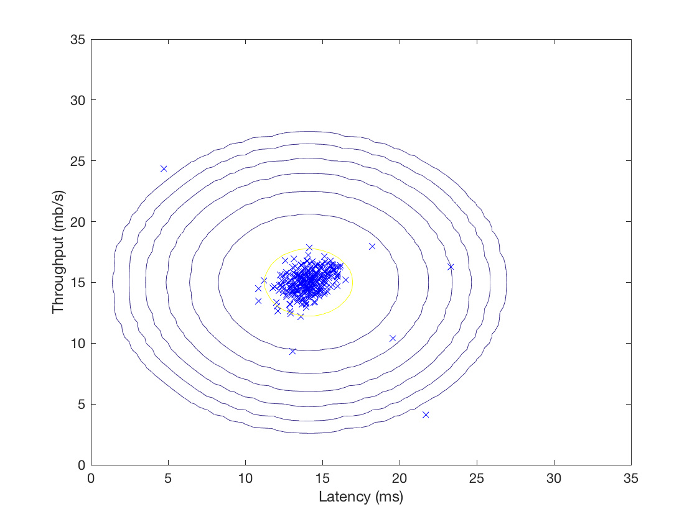
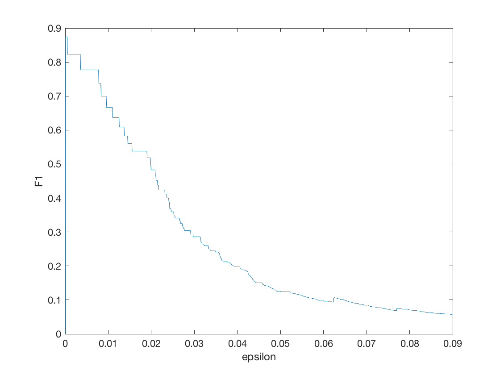
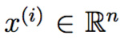
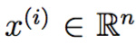
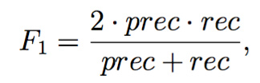
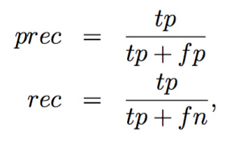
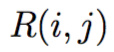
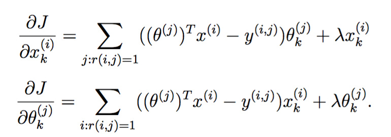

 斯坦福ML（Matlab
斯坦福ML（Matlab ）公开课最后一次编程练习，实现了异常检测算法并应用于服务器异常检测，然后利用协同过滤实现一个电影推荐系统。至此又填完一个坑，matlab感觉也入门了
）公开课最后一次编程练习，实现了异常检测算法并应用于服务器异常检测，然后利用协同过滤实现一个电影推荐系统。至此又填完一个坑，matlab感觉也入门了 。
。

异常检测
你收集了一些服务器的流量与延迟数据，假设大部分服务器都是正常的，请找出不正常的那些。
这是个简单的二维数据，加载与可视化:
- %% ================== Part 1: Load Example Dataset ===================
- % We start this exercise by using a small dataset that is easy to
- % visualize.
- %
- % Our example case consists of 2 network server statistics across
- % several machines: the latency and throughput of each machine.
- % This exercise will help us find possibly faulty (or very fast) machines.
- %
- fprintf('Visualizing example dataset for outlier detection.\n\n');
- % The following command loads the dataset. You should now have the
- % variables X, Xval, yval in your environment
- load('ex8data1.mat');
- % Visualize the example dataset
- plot(X(:, 1), X(:, 2), 'bx');
- axis([0 30 0 30]);
- xlabel('Latency (ms)');
- ylabel('Throughput (mb/s)');
- fprintf('Program paused. Press enter to continue.\n');
- pause

高斯分布
吴恩达教授说，生活中大部分数据都符合高斯分布。这里也假设数据服从高斯分布，定义数据集 ，其中。对每个特征x_i，都需要估计一个高斯分布。也就是说，i=1…n，对第i维
，其中。对每个特征x_i，都需要估计一个高斯分布。也就是说，i=1…n，对第i维 ，找到均值
，找到均值 和方差
和方差 ，使其满足高斯分布：
，使其满足高斯分布：

上式是高斯分布的密度函数，对于多变量高斯分布，其实现如下：
- function p = multivariateGaussian(X, mu, Sigma2)
- %MULTIVARIATEGAUSSIAN Computes the probability density function of the
- %multivariate gaussian distribution.
- % p = MULTIVARIATEGAUSSIAN(X, mu, Sigma2) Computes the probability
- % density function of the examples X under the multivariate gaussian
- % distribution with parameters mu and Sigma2. If Sigma2 is a matrix, it is
- % treated as the covariance matrix. If Sigma2 is a vector, it is treated
- % as the \sigma^2 values of the variances in each dimension (a diagonal
- % covariance matrix)
- %
- k = length(mu);
- if (size(Sigma2, 2) == 1) || (size(Sigma2, 1) == 1)
- Sigma2 = diag(Sigma2);
- end
- X = bsxfun(@minus, X, mu(:)');
- p = (2 * pi) ^ (- k / 2) * det(Sigma2) ^ (-0.5) * ...
- exp(-0.5 * sum(bsxfun(@times, X * pinv(Sigma2), X), 2));
- end
该函数适用于矩阵，可一次性返回X中每个数据点的概率密度。传入参数Sigma2如果是向量，则以该向量为对角线创建协方差矩阵。
估计高斯分布的参数
其实就是计算均值和方差啦：


注意matlab的var方差默认除以（m-1），和上面的定义不一样。
实现如下：
- function [mu sigma2] = estimateGaussian(X)
- %ESTIMATEGAUSSIAN This function estimates the parameters of a
- %Gaussian distribution using the data in X
- % [mu sigma2] = estimateGaussian(X),
- % The input X is the dataset with each n-dimensional data point in one row
- % The output is an n-dimensional vector mu, the mean of the data set
- % and the variances sigma^2, an n x 1 vector
- %
- % Useful variables
- [m, n] = size(X);
- % You should return these values correctly
- mu = zeros(n, 1);
- sigma2 = zeros(n, 1);
- % ====================== YOUR CODE HERE ======================
- % Instructions: Compute the mean of the data and the variances
- % In particular, mu(i) should contain the mean of
- % the data for the i-th feature and sigma2(i)
- % should contain variance of the i-th feature.
- %
- mu = mean(X)';
- %var normalizes V by N-1 if N>1,where N is the sample size.
- sigma2 = var(X) * (n -1) / n;
- for i = 1:n
- X(:,i) = X(:,i) - mu(i);
- end
- sigma2 = 1 / m * sum(X .^2)';
- % =============================================================
- end
怪简单的，调用方法如下：
- %% ================== Part 2: Estimate the dataset statistics ===================
- % For this exercise, we assume a Gaussian distribution for the dataset.
- %
- % We first estimate the parameters of our assumed Gaussian distribution,
- % then compute the probabilities for each of the points and then visualize
- % both the overall distribution and where each of the points falls in
- % terms of that distribution.
- %
- fprintf('Visualizing Gaussian fit.\n\n');
- % Estimate my and sigma2
- [mu sigma2] = estimateGaussian(X);
- % Returns the density of the multivariate normal at each data point (row)
- % of X
- p = multivariateGaussian(X, mu, sigma2);
可视化高斯分布
既然每个数据点都有一个概率密度，不如将该密度可视化出来：
- function visualizeFit(X, mu, sigma2)
- %VISUALIZEFIT Visualize the dataset and its estimated distribution.
- % VISUALIZEFIT(X, p, mu, sigma2) This visualization shows you the
- % probability density function of the Gaussian distribution. Each example
- % has a location (x1, x2) that depends on its feature values.
- %
- [X1,X2] = meshgrid(0:.5:35);
- Z = multivariateGaussian([X1(:) X2(:)],mu,sigma2);
- Z = reshape(Z,size(X1));
- plot(X(:, 1), X(:, 2),'bx');
- hold on;
- % Do not plot if there are infinities
- if (sum(isinf(Z)) == 0)
- contour(X1, X2, Z, 10.^(-20:3:0)');
- end
- hold off;
- end
meshgrid接受一个向量，创建两个大小相等的方阵，一个矩阵的每行都是向量的拷贝，另一个每列都是向量的拷贝。这样在一个矩阵中任取一个元素作为x，在另一个矩阵的对应位置取到y，就能得到指定区间的格子坐标。
然后contour用向量10.^(-20:3:0)'限制只要概率密度等于这七个数的七条等高线，于是得到：
选择阈值
概率密度有了，怎么选取一个阈值 ，来决定概率小于该阈值的点为离群点呢？
，来决定概率小于该阈值的点为离群点呢？
一种方法是利用交叉验证集（有label表示该点是否是离群点）的F1值来决定，我们尝试多个 ，并基于该
，并基于该 计算交叉验证集上的F1值，取最高者返回。F1定义如下：
计算交叉验证集上的F1值，取最高者返回。F1定义如下：

其中

tp代表真阳，fp代表假阳，fn表示假阴。
实现如下：
- function [bestEpsilon bestF1] = selectThreshold(yval, pval)
- %SELECTTHRESHOLD Find the best threshold (epsilon) to use for selecting
- %outliers
- % [bestEpsilon bestF1] = SELECTTHRESHOLD(yval, pval) finds the best
- % threshold to use for selecting outliers based on the results from a
- % validation set (pval) and the ground truth (yval).
- %
- bestEpsilon = 0;
- bestF1 = 0;
- F1 = 0;
- stepsize = (max(pval) - min(pval)) / 1000;
- for epsilon = min(pval):stepsize:max(pval)
- % ====================== YOUR CODE HERE ======================
- % Instructions: Compute the F1 score of choosing epsilon as the
- % threshold and place the value in F1. The code at the
- % end of the loop will compare the F1 score for this
- % choice of epsilon and set it to be the best epsilon if
- % it is better than the current choice of epsilon.
- %
- % Note: You can use predictions = (pval < epsilon) to get a binary vector
- % of 0's and 1's of the outlier predictions
- predictions = (pval < epsilon);
- tp = sum((predictions == 1) & (yval == 1));
- fp = sum((predictions == 1) & (yval == 0));
- fn = sum((predictions == 0) & (yval == 1));
- if tp + fp ~= 0
- prec = tp / (tp + fp);
- else
- prec = 0;
- end
- if tp + fn ~= 0
- rec = tp / (tp + fn);
- else
- rec = 0;
- end
- if prec + rec ~= 0
- F1 = 2 * prec * rec / (prec + rec);
- else
- F1 = 0;
- end
- % =============================================================
- if F1 > bestF1
- bestF1 = F1;
- bestEpsilon = epsilon;
- end
- end
- end
调用方法如下：
- %% ================== Part 4: Multidimensional Outliers ===================
- % We will now use the code from the previous part and apply it to a
- % harder problem in which more features describe each datapoint and only
- % some features indicate whether a point is an outlier.
- %
- % Loads the second dataset. You should now have the
- % variables X, Xval, yval in your environment
- load('ex8data2.mat');
- % Apply the same steps to the larger dataset
- [mu sigma2] = estimateGaussian(X);
- % Training set
- p = multivariateGaussian(X, mu, sigma2);
- % Cross-validation set
- pval = multivariateGaussian(Xval, mu, sigma2);
- % Find the best threshold
- [epsilon F1] = selectThreshold(yval, pval);
- fprintf('Best epsilon found using cross-validation: %e\n', epsilon);
- fprintf('Best F1 on Cross Validation Set: %f\n', F1);
- fprintf('# Outliers found: %d\n', sum(p < epsilon));
- fprintf(' (you should see a value epsilon of about 1.38e-18)\n\n');
- pause
输出：
- Best epsilon found using cross-validation: 8.990853e-05
- Best F1 on Cross Validation Set: 0.875000
- (you should see a value epsilon of about 8.99e-05)
如果我们将epsilon与F1的关系可视化出来，得到
把epslion坐标缩放一下，集中注意力于0到0.001之间：
F1的确有一个先增后减的过程。
接着我们可以利用这个阈值找出离群点并高亮：
推荐系统
这部分练习实现一个简单的推荐系统，应用于电影数据集。
电影数据集
该数据集大约有1000个用户，2000部电影，一些用户给电影的打分（1到5星级）。数据包含两个大小相同的矩阵Y和R，两者大小都是电影数*用户数。当=1时， 代表用户j对电影i的评分，否则代表用户j还未对电影i进行评分。
代表用户j对电影i的评分，否则代表用户j还未对电影i进行评分。
为了帮助大家熟悉数据集，首先完成一个简单任务：计算第一部电影的平均分：
- %% =============== Part 1: Loading movie ratings dataset ================
- % You will start by loading the movie ratings dataset to understand the
- % structure of the data.
- %
- fprintf('Loading movie ratings dataset.\n\n');
- % Load data
- load ('ex8_movies.mat');
- % Y is a 1682x943 matrix, containing ratings (1-5) of 1682 movies on
- % 943 users
- %
- % R is a 1682x943 matrix, where R(i,j) = 1 if and only if user j gave a
- % rating to movie i
- % From the matrix, we can compute statistics like average rating.
- fprintf('Average rating for movie 1 (Toy Story): %f / 5\n\n', ...
- mean(Y(1, R(1, :))));
R矩阵是布尔矩阵，可直接作为索引用。
我们还可以将Y矩阵作为一张图片可视化出来，每个像素代表用户对电影的评分，越亮分数越高。
- % We can "visualize" the ratings matrix by plotting it with imagesc
- imagesc(Y);
- ylabel('Movies');
- xlabel('Users');
- fprintf('\nProgram paused. Press enter to continue.\n');
- pause;
得到：
推荐系统使用协同过滤算法，预测用户未曾观看的电影的评分，并为其推荐评分最高的电影。
接下来的代码中会经常看到如下两个矩阵：

X大小为电影数*特征数，第i行代表第i部电影的特征，Theta大小为用户数*特征数，第j行代表第j个用户对应的参数。在本次试验中，特征数为100。
协同过滤学习算法
协同过滤学习算法其实是个线性回归，给定上述两个矩阵，用户j对电影i的评分的假设函数为：

而算法的目的就是通过对数据集的学习，最小化误差的平方和，得到上述两个矩阵（协同算法的参数）。同线性回归一样，可以使用开箱即用的优化函数fmincg。
损失函数
损失函数（无正则化项）定义为：

与线性回归唯一的不同点在于，只计算r(i,j)=1的那些误差。
协同过滤梯度
损失函数的梯度定义如下：

注意X的梯度矩阵与X大小相同，Theta也是如此。
正则化的损失函数和梯度
分别定义如下：


实现如下
- function [J, grad] = cofiCostFunc(params, Y, R, num_users, num_movies, ...
- num_features, lambda)
- %COFICOSTFUNC Collaborative filtering cost function
- % [J, grad] = COFICOSTFUNC(params, Y, R, num_users, num_movies, ...
- % num_features, lambda) returns the cost and gradient for the
- % collaborative filtering problem.
- %
- % Unfold the U and W matrices from params
- X = reshape(params(1:num_movies*num_features), num_movies, num_features);
- Theta = reshape(params(num_movies*num_features+1:end), ...
- num_users, num_features);
- % You need to return the following values correctly
- J = 0;
- X_grad = zeros(size(X));
- Theta_grad = zeros(size(Theta));
- % ====================== YOUR CODE HERE ======================
- % Instructions: Compute the cost function and gradient for collaborative
- % filtering. Concretely, you should first implement the cost
- % function (without regularization) and make sure it is
- % matches our costs. After that, you should implement the
- % gradient and use the checkCostFunction routine to check
- % that the gradient is correct. Finally, you should implement
- % regularization.
- %
- % Notes: X - num_movies x num_features matrix of movie features
- % Theta - num_users x num_features matrix of user features
- % Y - num_movies x num_users matrix of user ratings of movies
- % R - num_movies x num_users matrix, where R(i, j) = 1 if the
- % i-th movie was rated by the j-th user
- %
- % You should set the following variables correctly:
- %
- % X_grad - num_movies x num_features matrix, containing the
- % partial derivatives w.r.t. to each element of X
- % Theta_grad - num_users x num_features matrix, containing the
- % partial derivatives w.r.t. to each element of Theta
- %
- M = (X * Theta' - Y) .^ 2;
- J = sum(sum(R .* M)) / 2;
- J = J + lambda / 2 * (sum(sum(X .^ 2)) + sum(sum(Theta .^ 2)));
- X_grad = (R .* (X * Theta' - Y)) * Theta;
- X_grad = X_grad + lambda * X;
- Theta_grad = (R .* (X * Theta' - Y))' * X;
- Theta_grad = Theta_grad + lambda * Theta;
- % =============================================================
- grad = [X_grad(:); Theta_grad(:)];
- end
斯坦福练习中还写了个数值上检查梯度函数的脚本，与训练神经网络时的梯度校验是一个原理，略过。
调用方法：
- %% ========= Part 4: Collaborative Filtering Cost Regularization ========
- % Now, you should implement regularization for the cost function for
- % collaborative filtering. You can implement it by adding the cost of
- % regularization to the original cost computation.
- %
- % Evaluate cost function
- J = cofiCostFunc([X(:) ; Theta(:)], Y, R, num_users, num_movies, ...
- num_features, 1.5);
- fprintf(['Cost at loaded parameters (lambda = 1.5): %f '...
- '\n(this value should be about 31.34)\n'], J);
- fprintf('\nProgram paused. Press enter to continue.\n');
- pause;
训练推荐系统
有了损失函数，如同线性回归一样，使用matlab的无约束最小化优化函数即可：
- %% ================== Part 7: Learning Movie Ratings ====================
- % Now, you will train the collaborative filtering model on a movie rating
- % dataset of 1682 movies and 943 users
- %
- fprintf('\nTraining collaborative filtering...\n');
- % Load data
- load('ex8_movies.mat');
- % Y is a 1682x943 matrix, containing ratings (1-5) of 1682 movies by
- % 943 users
- %
- % R is a 1682x943 matrix, where R(i,j) = 1 if and only if user j gave a
- % rating to movie i
- % Add our own ratings to the data matrix
- Y = [my_ratings Y];
- R = [(my_ratings ~= 0) R];
- % Normalize Ratings
- [Ynorm, Ymean] = normalizeRatings(Y, R);
- % Useful Values
- num_users = size(Y, 2);
- num_movies = size(Y, 1);
- num_features = 10;
- % Set Initial Parameters (Theta, X)
- X = randn(num_movies, num_features);
- Theta = randn(num_users, num_features);
- initial_parameters = [X(:); Theta(:)];
- % Set options for fmincg
- options = optimset('GradObj', 'on', 'MaxIter', 100);
- % Set Regularization
- lambda = 10;
- theta = fmincg (@(t)(cofiCostFunc(t, Y, R, num_users, num_movies, ...
- num_features, lambda)), ...
- initial_parameters, options);
- % Unfold the returned theta back into U and W
- X = reshape(theta(1:num_movies*num_features), num_movies, num_features);
- Theta = reshape(theta(num_movies*num_features+1:end), ...
- num_users, num_features);
- fprintf('Recommender system learning completed.\n');
- fprintf('\nProgram paused. Press enter to continue.\n');
- pause;
执行推荐
假设新来了一个用户，他观看并给一些电影打了分：
- %% ============== Part 6: Entering ratings for a new user ===============
- % Before we will train the collaborative filtering model, we will first
- % add ratings that correspond to a new user that we just observed. This
- % part of the code will also allow you to put in your own ratings for the
- % movies in our dataset!
- %
- movieList = loadMovieList();
- % Initialize my ratings
- my_ratings = zeros(1682, 1);
- % Check the file movie_idx.txt for id of each movie in our dataset
- % For example, Toy Story (1995) has ID 1, so to rate it "4", you can set
- my_ratings(1) = 4;
- % Or suppose did not enjoy Silence of the Lambs (1991), you can set
- my_ratings(98) = 2;
- % We have selected a few movies we liked / did not like and the ratings we
- % gave are as follows:
- my_ratings(7) = 3;
- my_ratings(12)= 5;
- my_ratings(54) = 4;
- my_ratings(64)= 5;
- my_ratings(66)= 3;
- my_ratings(69) = 5;
- my_ratings(183) = 4;
- my_ratings(226) = 5;
- my_ratings(355)= 5;
- fprintf('\n\nNew user ratings:\n');
- for i = 1:length(my_ratings)
- if my_ratings(i) > 0
- fprintf('Rated %d for %s\n', my_ratings(i), ...
- movieList{i});
- end
- end
- fprintf('\nProgram paused. Press enter to continue.\n');
- pause;
其中loadMovieList加载了电影标题与id的映射表，没什么好看的。该用户观看了下列电影：
- New user ratings:
- Rated 4 for Toy Story (1995)
- Rated 3 for Twelve Monkeys (1995)
- Rated 5 for Usual Suspects, The (1995)
- Rated 4 for Outbreak (1995)
- Rated 5 for Shawshank Redemption, The (1994)
- Rated 3 for While You Were Sleeping (1995)
- Rated 5 for Forrest Gump (1994)
- Rated 2 for Silence of the Lambs, The (1991)
- Rated 4 for Alien (1979)
- Rated 5 for Die Hard 2 (1990)
- Rated 5 for Sphere (1998)
这家伙似乎喜欢看动作片啊：
为其推荐电影：
- %% ================== Part 8: Recommendation for you ====================
- % After training the model, you can now make recommendations by computing
- % the predictions matrix.
- %
- p = X * Theta';
- my_predictions = p(:,1) + Ymean;
- movieList = loadMovieList();
- [r, ix] = sort(my_predictions, 'descend');
- fprintf('\nTop recommendations for you:\n');
- for i=1:10
- j = ix(i);
- fprintf('Predicting rating %.1f for movie %s\n', my_predictions(j), ...
- movieList{j});
- end
- fprintf('\n\nOriginal ratings provided:\n');
- for i = 1:length(my_ratings)
- if my_ratings(i) > 0
- fprintf('Rated %d for %s\n', my_ratings(i), ...
- movieList{i});
- end
- end
这里推荐了预测评分top10 。
得到：
- Top recommendations for you:
- Predicting rating 8.6 for movie Star Wars (1977)
- Predicting rating 8.5 for movie Titanic (1997)
- Predicting rating 8.3 for movie Shawshank Redemption, The (1994)
- Predicting rating 8.3 for movie Raiders of the Lost Ark (1981)
- Predicting rating 8.2 for movie Schindler's List (1993)
- Predicting rating 8.2 for movie Good Will Hunting (1997)
- Predicting rating 8.1 for movie Empire Strikes Back, The (1980)
- Predicting rating 8.0 for movie Usual Suspects, The (1995)
- Predicting rating 8.0 for movie As Good As It Gets (1997)
- Predicting rating 8.0 for movie Braveheart (1995)
似乎还行。